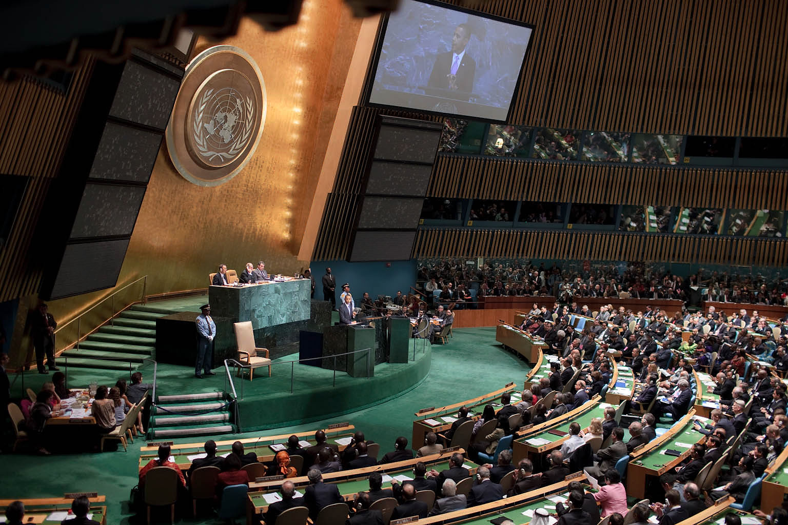
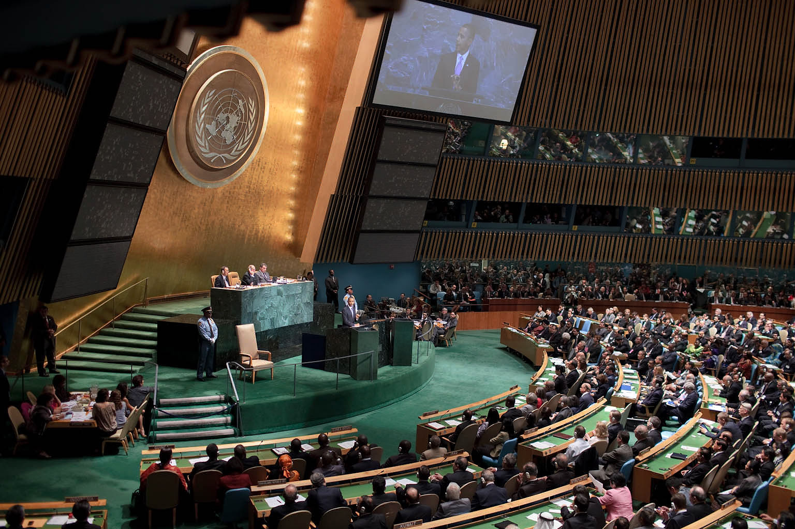
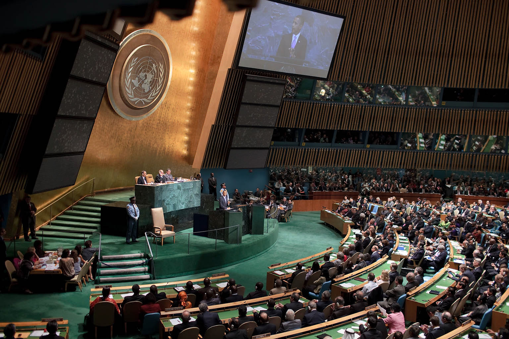
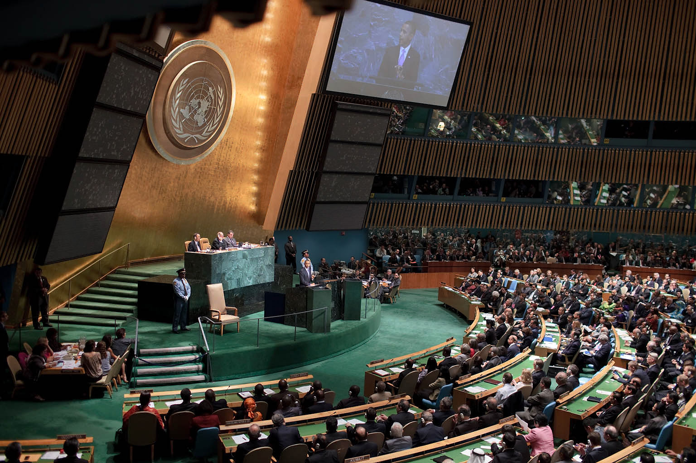

 

It's finals! You all know what that means. This final project is uploaded and now REAL//ISSUES is (more or less) complete! This will be the final update and what a wonderful ride it has been. I want to thank you all for reading and allowing me to type this filler text. This term was great and I felt like I learned so much. Hopefully we can all see each other again. Until then, see ya.
Now you all can GET//REAL and have the most important news for students as soon as it's published!
Subscribe!Still worrying about not being able to finish that paper in time? Professor won't let you use Wikipedia? Well don't worry, we're here. At REAL//ISSUES, we guarantee to give you proper sources and to look as professional as possible.
Well, we try out best to. Either way, if you don't feel like citing us due to a lack of "professionalism" and "recognition", you should check out this useful site:
cynicaljerk.com
R.I.P. 2 my youth, you could call this the funeral. I'm just telling the truth, you can play this at the funeral. Wrap me up in Chanel inside my coffin. Might go to hell and there ain't no stopping. Momma said if I really want it, then I can change it, yeah. I'm using white lighters to see what's in front of me. Don't cry and don't be sad, I'm in paradise with Dad. Close my eyes and cross my arms.
Let me be with the stars..You know him, talk show hosts and the alt-right love him, but what are some of the good things we've seen in his presidency?
Read More
Norway's solution to cleaner energy includes some unique takes on how we get our energy.
Read MoreYou know how I sometimes have really brilliant ideas? I hate yogurt. It's just stuff with bits in. You've swallowed a planet! It's a fez. I wear a fez now. Fezes are cool. All I've got to do is pass as an ordinary human being. Simple. What could possibly go wrong?
And now you can learn more!.I tried to discover a little something to make me sweeter. Oh baby refrain, from breaking my heart. I'm so in love with you, I'll be forever blue. That you give me no reason, why you make work so hard? Soul, I hear you calling. So baby, please. Give a little respect to me. And if I should falter, would you open your arms out to me?
I'm so in love with you, I'll be forever blue..
Now that Propostion 1 has been passed, let's get the facts straight before you start toking.
Read MoreI have a dark side, too. I think he's got a crush on you, Dex! I'm real proud of you for coming, bro. I know you hate funerals. Rorschach would say you have a hard time relating to others. Pretend. You pretend the feelings are there, for the world, for the people around you. Who knows? Maybe one day they will be. Makes me a … scientist. Somehow, I doubt that. You have a good heart, Dexter. I think he's got a crush on you, Dex! He taught me a code. To survive. God created pudding, and then he rested. I'm going to tell you something that I've never told anyone before.